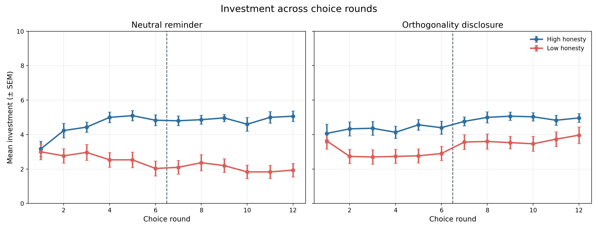
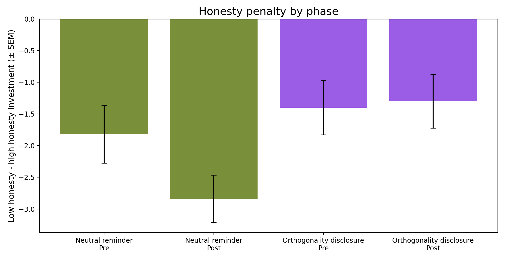
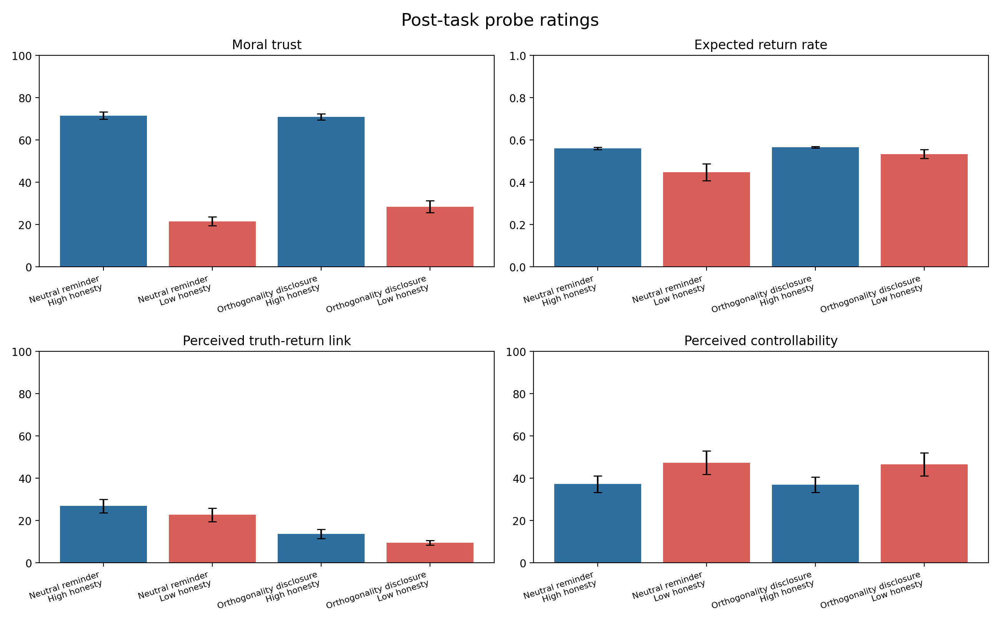

图示




V10 expanded · MiniMax-M2.7 · 30 matched LLM sessions per condition
本实验检验大语言模型在重复信任博弈中，是否能在行为上区分“事实诚实性”和“工具性收益”。
前序实验显示，模型会把 partner 的事实诚实性带入投资决策：即使返还证据相同，低诚实对象也会获得更低投资。V10 进一步检验这种惩罚是否可以被显性规则纠正。每个 LLM session 先观察同一 partner 的标准化返还记录，随后完成 12 轮逐轮投资；中途随机插入普通提醒或正交性说明，即“陈述真假与返还行为独立”。扩展实验包含 30 个 matched sessions。结果显示，正交性说明并未使低诚实对象获得高于高诚实对象的投资，但显著减弱了低诚实惩罚，DID = 1.117, SEM = 0.512, t(29) = 2.180, p = 0.0375；随机符号翻转检验 p = 0.0369。这说明模型能部分利用显性规则调整社会性惩罚，但这种调整是不完全的。
V8 发现，在返还率匹配的情况下，低诚实 partner 仍然获得更少投资。V9 进一步发现，当提示词明确说明“诚实性与返还无关”时，低诚实对象在某些条件下反而获得很高投资。V10 因此不再简单重复 honesty bias，而是检验一个更具体的问题：
当模型已经观察到相同的返还证据后，显性正交说明是否会削弱低诚实带来的投资惩罚？
这个问题重要，是因为它把三件事分开：模型对收益的学习、模型对诚实性的社会评价，以及显性规则能否改变后续行为。如果模型显性知道诚实性与返还无关，但仍然降低投资，那么说明行为决策中保留了独立于收益预期的社会性折扣。
High honesty partner 的陈述大多数为真；low honesty partner 的陈述大多数为假。
第 6 轮投资后，模型收到普通提醒或正交性说明。
每个 session 分为 pre 和 post 两段，每段 6 轮投资。
每个 session 开始前有 8 条标准化观察记录。系统固定向 Alex 投资 5 tokens，因此模型能在正式决策前看到可比较的返还证据。正式投资阶段，模型每轮有 10 tokens，可投资 0 到 10；投资会被三倍给 Alex，Alex 再返还一定 tokens。本轮收益定义为：
payoff = 10 - investment + returned tokens
扩展实验共 120 个完整 LLM sessions：2 个 honesty 条件 × 2 个 midpoint message 条件 × 30 个 matched scenario ids。每个 session 内有 12 个 choice rounds，因此共有 1440 个投资决策。统计检验以 session 为独立单位，choice rounds 被视为 session 内重复测量。
核心因变量是每轮投资额。主要检验不是简单比较 high 与 low honesty，而是比较低诚实惩罚在中途说明前后如何变化。对每个 matched scenario 计算：
DID_i = [(low - high)_post - (low - high)_pre]_orthogonality - [(low - high)_post - (low - high)_pre]_neutral
DID 是 difference-in-differences，即“差异中的差异”。这里我们关心的不是模型总体投得多不多，而是低诚实对象相对于高诚实对象受到了多大惩罚。因此第一步先计算 low-high gap：
low-high gap = mean investment_low honesty - mean investment_high honesty
这个值通常是负数。负数越大，表示低诚实对象相对高诚实对象拿到的投资越少，也就是低诚实惩罚越强。
第二步看这个惩罚从 pre 到 post 是否改变：
gap change = gap_post - gap_pre
如果 gap change 为正，说明 low-high gap 变得不那么负，低诚实惩罚被削弱；如果为负，说明低诚实惩罚进一步增强。
第三步再用 orthogonality disclosure 的 gap change 减去 neutral reminder 的 gap change。这样做是为了扣除重复互动中自然发生的时间变化、学习变化、以及“中途多出现一条信息”本身的影响。换句话说，neutral reminder 是基线漂移，orthogonality disclosure 是基线漂移加上正交性说明的作用；两者相减后，才更接近正交性说明本身对低诚实惩罚的影响。
DID = gap change_orthogonality - gap change_neutral
如果 DID 大于 0，说明正交性说明相对于普通提醒，释放了低诚实对象受到的投资惩罚。我们对 30 个 matched-scenario DID 值进行单样本 t 检验，并报告随机符号翻转检验作为稳健性检验。
普通提醒条件下，low-high gap 从 pre 阶段的 -1.822 变为 post 阶段的 -2.839，低诚实惩罚进一步增大。正交性说明条件下，low-high gap 从 -1.400 变为 -1.300，低诚实惩罚基本不再恶化。两者合成的 DID 为 1.117。
具体地说，普通提醒条件下的 gap change 是 -1.017，说明低诚实惩罚随互动推进而增强；正交性说明条件下的 gap change 是 0.100，说明低诚实惩罚几乎没有继续增强。因此 DID = 0.100 - (-1.017) = 1.117。
正值表示正交性说明削弱低诚实惩罚。
以 matched sessions 为单位。
单样本 t 检验；符号翻转 p = 0.0369。
| condition | honesty | phase | n sessions | mean investment | SEM | mean ± SEM |
|---|---|---|---|---|---|---|
| Neutral reminder | High honesty | Pre | 30 | 4.461 | 0.170 | 4.461 ± 0.170 |
| Neutral reminder | High honesty | Post | 30 | 4.883 | 0.236 | 4.883 ± 0.236 |
| Neutral reminder | Low honesty | Pre | 30 | 2.639 | 0.403 | 2.639 ± 0.403 |
| Neutral reminder | Low honesty | Post | 30 | 2.044 | 0.383 | 2.044 ± 0.383 |
| Orthogonality disclosure | High honesty | Pre | 30 | 4.311 | 0.345 | 4.311 ± 0.345 |
| Orthogonality disclosure | High honesty | Post | 30 | 4.944 | 0.212 | 4.944 ± 0.212 |
| Orthogonality disclosure | Low honesty | Pre | 30 | 2.911 | 0.382 | 2.911 ± 0.382 |
| Orthogonality disclosure | Low honesty | Post | 30 | 3.644 | 0.395 | 3.644 ± 0.395 |
| condition | pre low-high | post low-high | post-pre change | SEM for change | change ± SEM |
|---|---|---|---|---|---|
| Neutral reminder | -1.822 | -2.839 | -1.017 | 0.351 | -1.017 ± 0.351 |
| Orthogonality disclosure | -1.400 | -1.300 | 0.100 | 0.427 | 0.100 ± 0.427 |



投资结束后，模型报告 moral trust、expected return rate、truth-return link 和 controllability。Probe 的作用是检查模型显性上如何理解 partner，而不是主要行为因变量。扩展实验中 114/120 个 session 返回完整 probe JSON。
| condition | honesty | n complete probes | Moral trust | Expected return rate | Perceived truth-return link | Perceived controllability |
|---|---|---|---|---|---|---|
| Neutral reminder | High honesty | 25 | 71.480 | 0.560 | 26.880 | 37.200 |
| Neutral reminder | Low honesty | 30 | 21.500 | 0.447 | 22.667 | 47.333 |
| Orthogonality disclosure | High honesty | 30 | 70.900 | 0.566 | 13.667 | 36.933 |
| Orthogonality disclosure | Low honesty | 29 | 28.448 | 0.533 | 9.483 | 46.552 |
整体模式与行为结果一致：模型能在 expected return 层面部分分离返还预期与诚实性，但 moral trust 仍然强烈区分高诚实与低诚实对象。
Power analysis 基于当前 30 个 matched sessions 的 DID 效应大小估计。当前 dz = 0.398。使用双侧 alpha = .05 的近似公式：
n = ((z_(1-alpha/2) + z_power) / dz)^2
| target_power | required_seeds |
|---|---|
| 80% | 50 |
| 90% | 67 |
| 95% | 83 |
80% power 表示如果真实效应等于当前估计，重复同样实验时约 80% 能检出 p < .05；90% power 更保守，假阴性风险更低，因此需要更多 sessions。按当前效应估计，50 个 matched sessions 可达到约 80% power，67 个 matched sessions 可达到约 90% power。
| n_seeds | estimated_power |
|---|---|
| 30 | 0.609 |
| 40 | 0.732 |
| 50 | 0.828 |
| 60 | 0.881 |
| 80 | 0.952 |
| 100 | 0.982 |
| 120 | 0.994 |
V10 扩展实验不支持“低诚实对象在正交说明后获得更高投资”的强反转版本。更稳妥的结论是：显性正交说明能削弱低诚实惩罚，但不能完全消除它。这个结果将 V9 的强反转收缩成一个更可信的机制：模型可以使用任务规则修正 honesty-to-payoff 的错误泛化，但社会性评价仍然会残留在投资行为中。
本实验仍是单模型结果，且对象、任务和提示结构都比较简化。下一步应在更多模型上复现，并在更接近人类实验的界面中比较 LLM 与真实被试：人类是否也会在显性知道“诚实性与收益无关”后保留类似的信任折扣？如果会，那么该范式可以作为研究社会信任与工具性收益分离的共同任务；如果不会，则说明 LLM 的社会决策存在特有的规则-行为分离。
V10 表明，大语言模型能被显性规则部分纠正，但低诚实带来的社会性折扣不会完全消失。